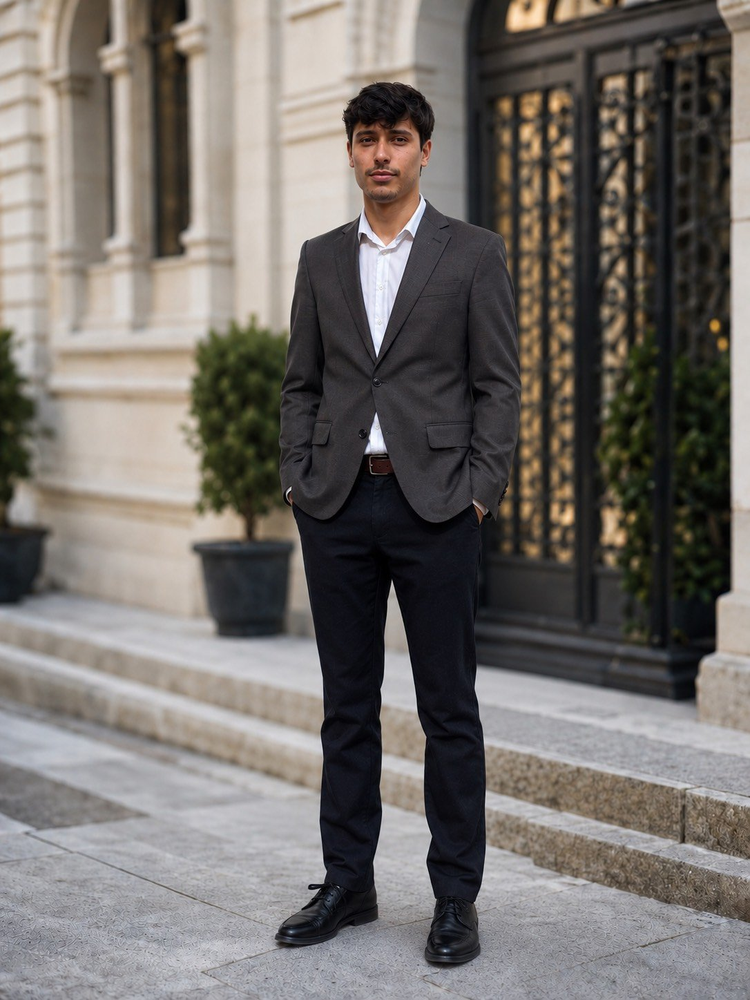

Building and learning through hands-on projects in Cybersecurity · Cloud · Networks

I'm a Computer Science student at Brescia University in Kentucky, originally from Porto, Portugal. My main interest is cybersecurity, with a focus on defensive security, networking, cloud security, and security monitoring.
I enjoy learning by building hands-on projects. Recently, I've been working with Microsoft Azure and Microsoft Sentinel to understand how attacks can be detected and investigated in a real-world environment.
Before focusing more heavily on cybersecurity, I gained professional technology experience at KPMG Portugal, where I worked with Appian to develop a low-code application for a real client project.
Outside of technology, I play varsity volleyball for Brescia University.
Hands-on SOC lab using an intentionally exposed Windows Server VM in Microsoft Azure. Monitored RDP attack traffic with Microsoft Sentinel, analyzed security events, investigated source IP addresses, and visualized attack activity from the public internet.
View on GitHub →DQN agent trained with PyTorch to solve CartPole-v1. Implements replay buffer, target network, epsilon-greedy exploration, and live training visualization.
View on GitHub →K-Means clustering on 21,613 King County housing records. Identifies distinct market segments using PCA, silhouette analysis, and geographic visualization.
View on GitHub →Fully normalized SQLite database with triggers, constraints, and indexes. Includes a CustomTkinter desktop application with multiple management interfaces.
View on GitHub →Desktop NLP application classifying movie reviews as positive or negative using TF-IDF vectorization and machine learning models with confidence scoring.
View on GitHub →Python simulation of the RIP routing protocol using Bellman-Ford. Demonstrates convergence, count-to-infinity, and poison reverse on a network topology.
View on GitHub →Worked with Appian to develop a low-code application for a real client project in the insurance sector. Contributed to business process automation workflows and gained experience working in an enterprise technology consulting environment.
GPA 3.5 · Dean's List. Relevant coursework includes Networking, Cryptography, Artificial Intelligence, Data Analysis, System Analysis, Programming, and Computer Modeling. Minor in Business.
Compete as a libero and defensive specialist for the Brescia University men's volleyball program while balancing collegiate athletics and Computer Science studies.
I'm interested in cybersecurity, technology, and hands-on projects. I'm open to conversations, collaborations, internships, and opportunities to keep learning.